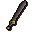

Steel 2h sword

| Config name | steel_2h_sword |
| Item id | 1311 |
| Value | 1000 gp |
| Weight | 8lb |
| Members | No |
| Tradeable | Yes |
| Stackable | No |
| Equip slot | righthand |
| Options | Wield |
| Category | weapon_2h_sword |
| Defined in | scripts/skill_combat/configs/melee/2hswords.obj |
| Equipment stats | Stab att -4, Slash att 21, Crush att 16, Magic att -4, Range def -1, Strength 22 |
Steel 2h sword
A two handed sword.
How to make
| Skill | Level | XP | Ingredients | Tool | How | Where | Makes |
|---|---|---|---|---|---|---|---|
| Smithing | 44 | 112.5 | interface | anvil | 1 |
Dropped by
| NPC | Level | Quantity | Rarity | Via | Notes |
|---|---|---|---|---|---|
| 92 | 1 | 1/32 (3.12%) |
Sold at
| Shop | Shopkeeper | Stock |
|---|---|---|
| Armoury | 2 | |
| Gulluck and Sons | 2 | |
| Gaius' Two Handed Shop. | 2 |
Referenced in scripts
scripts/drop tables/scripts/greater_demon.rs2scripts/levelrequire/scripts/tier5.rs2scripts/levelup/scripts/levelup_unlocks_smithing.rs2